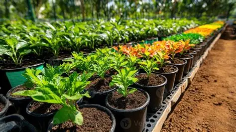

Bem-vindo ao Verde Lar
Transforme sua casa em um refúgio natural com dicas práticas de cultivo e o legado do amor pelas plantas.

Dica do Dia
Quer saber qual é o melhor segredo para manter suas folhagens sempre brilhantes e saudáveis?
Transforme sua casa em um refúgio natural com dicas práticas de cultivo e o legado do amor pelas plantas.

Quer saber qual é o melhor segredo para manter suas folhagens sempre brilhantes e saudáveis?